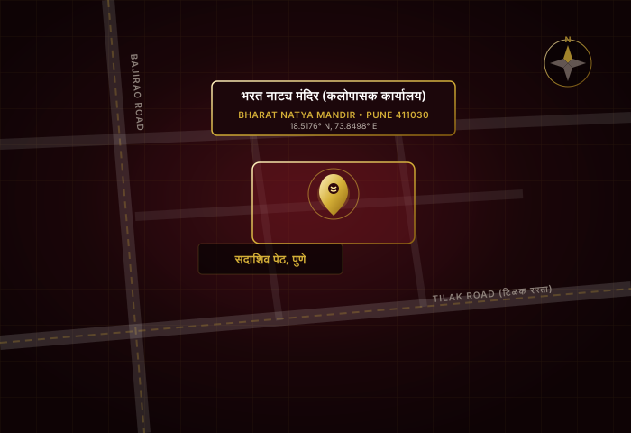

वार्षिक स्पर्धा
वार्षिक स्पर्धा
पुरुषोत्तम करंडक
महाराष्ट्रातील सर्वात प्रतिष्ठेची आणि जुनी आंतरमहाविद्यालयीन एकांकिका स्पर्धा.
महाराष्ट्रातील तरुणाईच्या नाट्य प्रतिभेला आणि एकांकिका चळवळीला दिशा देणारी अग्रगण्य सांस्कृतिक संस्था.

महाराष्ट्रीय कलोपासक या संस्थेची स्थापना १९६३ मध्ये पुणे येथे झाली. महाराष्ट्रातील महाविद्यालयीन तरुणांच्या कलागुणांना व्यासपीठ मिळवून देणे आणि प्रायोगिक रंगभूमीला नवी दिशा देणे हे संस्थेचे मुख्य उद्दिष्ट राहिले आहे.
गेल्या ६ दशकांहून अधिक काळ 'पुरुषोत्तम करंडक' सह विविध मानाच्या एकांकिका स्पर्धांच्या माध्यमातून कलोपासकने भारतीय चित्रपट व नाट्यसृष्टीला अनेक दिग्गज कलाकार, लेखक व तंत्रज्ञ दिले आहेत.
पूर्ण इतिहास वाचातरुण नाट्य प्रतिभेला व्यासपीठ देणाऱ्या तीन प्रमुख वार्षिक करंडक स्पर्धा
वार्षिक स्पर्धा
महाराष्ट्रातील सर्वात प्रतिष्ठेची आणि जुनी आंतरमहाविद्यालयीन एकांकिका स्पर्धा.
 नाट्यलेखन विशेष
नाट्यलेखन विशेष
मौलिक नाट्यलेखन व प्रायोगिक संकल्पनांना प्रोत्साहन देणारी विशेष एकांकिका स्पर्धा.
 दिग्दर्शन व तंत्र
दिग्दर्शन व तंत्र
उत्कृष्ट नाट्य दिग्दर्शन, अभिनय कौशल्य आणि रंगमंच तंत्रज्ञानाचा सन्मान करणारी स्पर्धा.
कलोपासकच्या रंगमंचावर घडलेल्या दिग्गज रंगकर्मी आणि विजेत्यांचे अनुभव
स्पर्धा, नोंदणी, तिकीट किंवा इतर चौकशीसाठी आमच्या कार्यालयाशी संपर्क साधा.
महाराष्ट्रीय कलोपासक
सदाशिव पेठ, भरत नाट्य मंदिर जवळ,
पुणे - ४११०३०, महाराष्ट्र, भारत
